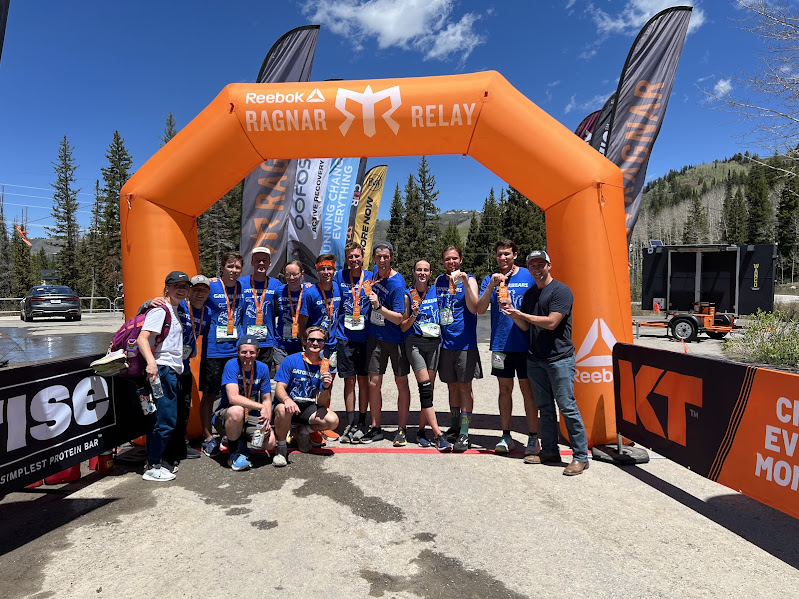

More about me
I served a two-year mission for the Church of Jesus Christ of Latter-day Saints in Uruguay, Montevideo. It was in Uruguay that I learned Spanish and developed a love for learning and speaking Spanish. ¡Vamo' La Celeste!
To go places and do things that have never been done before – that’s what living is all about.I wasn't always a runner, but after completing my first marathon, I was hooked. I have since run three. I have also run several other types of races, and I am currently training to run a Boston qualifying time this spring.
 At the 2024 Wasatch Back Road Ragnar, our team suprised ourselves running 200+ miles fast enough to win our division and place 6th overall.Unlike running, I have always enjoyed hiking, specifically "peak bagging." This is just a fancy way of saying the type of hiking I like to do is summiting mountaintops. Some of the favorite peaks I've summited are:
- Kings Peak (pictured below)
- Mt. Timpanogos
- Chimney Rock
- Lone Peak
- Tetzlaff's Peak